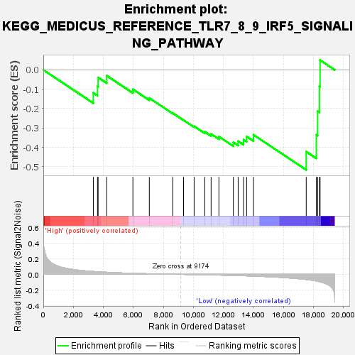
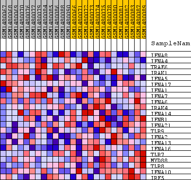
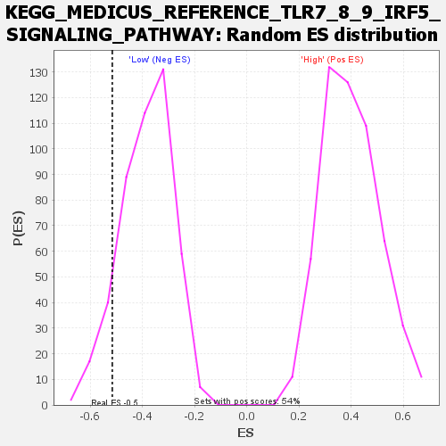

| Dataset | WG6v3.MRPL3.cls#High_versus_Low.MRPL3.cls#High_versus_Low_repos |
| Phenotype | MRPL3.cls#High_versus_Low_repos |
| Upregulated in class | Low |
| GeneSet | KEGG_MEDICUS_REFERENCE_TLR7_8_9_IRF5_SIGNALING_PATHWAY |
| Enrichment Score (ES) | -0.5164586 |
| Normalized Enrichment Score (NES) | -1.3424517 |
| Nominal p-value | 0.09368192 |
| FDR q-value | 1.0 |
| FWER p-Value | 1.0 |

| SYMBOL | TITLE | RANK IN GENE LIST | RANK METRIC SCORE | RUNNING ES | CORE ENRICHMENT | |
|---|---|---|---|---|---|---|
| 1 | IFNA8 | IFNA8 | 3333 | 0.037 | -0.1185 | No |
| 2 | IFNA4 | IFNA4 | 3611 | 0.033 | -0.0846 | No |
| 3 | TRAF6 | TRAF6 | 3653 | 0.033 | -0.0391 | No |
| 4 | IRAK1 | IRAK1 | 4222 | 0.027 | -0.0295 | No |
| 5 | IFNA5 | IFNA5 | 5970 | 0.013 | -0.1003 | No |
| 6 | IFNA17 | IFNA17 | 7064 | 0.008 | -0.1452 | No |
| 7 | IFNA1 | IFNA1 | 8630 | 0.002 | -0.2232 | No |
| 8 | IFNA7 | IFNA7 | 9346 | -0.000 | -0.2593 | No |
| 9 | IFNA6 | IFNA6 | 10051 | -0.003 | -0.2913 | No |
| 10 | IRAK4 | IRAK4 | 10758 | -0.006 | -0.3196 | No |
| 11 | IFNA14 | IFNA14 | 11182 | -0.007 | -0.3311 | No |
| 12 | IFNB1 | IFNB1 | 11702 | -0.009 | -0.3445 | No |
| 13 | IFNA21 | IFNA21 | 12665 | -0.014 | -0.3741 | No |
| 14 | TLR9 | TLR9 | 12985 | -0.016 | -0.3680 | No |
| 15 | IFNA2 | IFNA2 | 13344 | -0.018 | -0.3609 | No |
| 16 | IFNA13 | IFNA13 | 13548 | -0.019 | -0.3438 | No |
| 17 | IFNA16 | IFNA16 | 14005 | -0.022 | -0.3353 | No |
| 18 | TLR7 | TLR7 | 17521 | -0.065 | -0.4222 | Yes |
| 19 | MYD88 | MYD88 | 18196 | -0.084 | -0.3353 | Yes |
| 20 | TLR8 | TLR8 | 18283 | -0.088 | -0.2132 | Yes |
| 21 | IFNA10 | IFNA10 | 18399 | -0.093 | -0.0848 | Yes |
| 22 | IRF5 | IRF5 | 18445 | -0.095 | 0.0504 | Yes |

